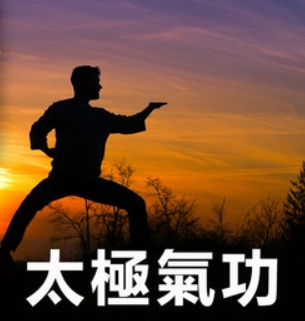

太极与气功
对于旁观者而言，太极（此处作为“太极拳”的简称）最显著的特征在于其优雅流畅的动作与极高的美学价值。 然而，对于习练者来说，凝神静心、呼吸调和，以及身、心、灵的平衡才是修炼的核心。
太极与气功有着密切的联系。这两种功法均以维护和增强健康为目标， 并共同致力于调动和运用人体内在的“气”这一生命能量。 在中国传统文化中，气功常被誉为太极拳之母， 因此，具备气功基础的人往往能够更深入地理解并掌握太极拳的内涵。
太极与气功同源

太极与气功是紧密相连的中国传统身心修养方法。太极本质上是一种“动功”，将气功的调息、入静与意念引导融入连续的武术动作中； 气功则涵盖动静多种形式，核心在于调整呼吸与精神。两者都以中国哲学为基础，追求身心和谐与健康。
主要区别运动形式：气功分为动功与静功（如静坐、站桩），动作相对单一或静止；太极拳是全身性的连续套路，属于复杂的动态拳法。
- 核心目的：气功侧重于医疗保健、调神和养气延年；太极拳兼顾防身技击与身体协调，最终追求“意、气、力”的结合。
- 锻炼入手：气功直接从放松精神和呼吸入手；太极拳从外在肢体动作的由松入柔切入，积柔成刚。
- 两者的联系动静互补：太极拳被称为“外家之形，内家之气”，打拳时要求“形动心静”，其练习过程本身就处于一种特殊的“气功态”中。
- 相辅相成：许多太极拳练习者会配合气功（如站桩或内功吐纳）来增强内气，否则容易流于表面成为“太极操”。
太极与“拳”
“太极”一词源远流长，早在《周易》这部拥有数千年历史的哲学经典中， 便用以描述天地万物共同的本源。太极图所呈现的阴阳两仪， 象征着对立统一、生生不息的宇宙规律， 也成为中国传统哲学最具代表性的符号之一。
“拳”通常被译作“拳法”或“武术”。 因此，“太极拳”不仅是一种修身养性的练习方式， 同时也是中国传统武术的重要流派之一， 将养生、哲学与技击艺术融为一体。
太极拳的起源
关于太极拳的起源，历来流传着众多理论与传说。 学界普遍认为，直到十九世纪以前， 太极拳主要在寺院及少数家族内部秘密传承， 其中尤以陈氏家族最负盛名。
根据广为流传的传统故事， 杨露禅曾乔装进入陈氏家族习拳， 学成后赴北京公开授艺， 并在传播过程中不断完善和发展拳法， 由此开启了太极拳广泛传播的新阶段。
太极拳的流派
太极拳在数百年的发展中，由于各代宗师的领悟与传承不同，逐渐演变出了五大传统流派。虽然各派招式名称有重叠（如“揽雀尾”、“单鞭”），但它们的身法、速度和发力风格有着显著的差异。
一、 太极拳的五大传统流派
- 1. 陈氏太极拳（陈派）—— 刚柔相济，快慢相间
- 特点：陈氏是太极拳的源头。它的动作最大的特色是震脚跳跃、发劲刚猛，并且带有明显的“缠丝劲”（螺旋拧转）。
- 风格：蓄劲如开弓，发劲如放箭。一套拳打下来，有极慢的推手，也有极快的发力，适合体力较好的人练习。
- 2. 杨氏太极拳（杨派）—— 舒展大方，柔和缓慢
- 特点：由杨露禅创立。杨氏将陈氏中的震脚、跳跃等高难度刚烈动作去掉，改为宽大舒展、平正紧凑的动作。
- 风格：如行云流水，匀速缓慢。这是目前世界上流传最广、练的人最多的流派，非常适合大众养生。
- 3. 吴氏太极拳（吴派）—— 斜中求正，紧凑细腻
- 特点：由吴鉴泉创立，源于杨氏。吴氏最独特的姿势是身法斜中求正（身体前倾，但从头到后脚呈一条直线）。
- 风格：动作小巧紧凑，推手时以柔化见长，极少有爆发性的发劲，深受文人墨客喜爱。
- 4. 武氏太极拳（武派）—— 姿势紧凑，步法灵活
- 特点：由武禹襄创立。武氏太极拳的动作非常精巧，绝对不双重（两脚不同时用力），注重内气的虚实转换。
- 风格：起吸落呼，步法手势开合明显，动作幅度小，非常强调内功的修炼。
- 5. 孙氏太极拳（孙派）—— 活步开合，小巧敏捷
- 特点：由“活步神拳”孙禄堂创立。他将形意拳的步法、八卦掌的转圈与太极拳融合，创造了“进步必跟，退步必撤”的活步太极。
- 风格：进退相随，动作敏捷，每到一个定式都会伴随一个“开合”手势，因此也被称为“开合太极拳”。
二、 太极拳的核心招式动作解析
无论是哪个流派，太极拳都有一些最经典、最具代表性的核心招式。以下是几个常见招式的动作内涵：
- 揽雀尾：太极拳的“母式”，包含了太极最核心的四种劲法——掤（bēng，向外支撑）、捋（lǚ，顺势向后引）、挤（jǐ，双脚向外挤推）、按（àn，向下向前推按）。动作就像用双手轻柔地顺着孔雀羽毛抚摸。
- 单鞭：极具标志性的防守反击招式。一只手变成“勾手”（像鞭尖），另一只手向侧面展掌推击。身体如同拉开的硬鞭，讲究整体的横向支撑力。
- 白鹤亮翅：这是一个典型的“虚实分明”动作。一脚脚尖点地（虚步），一手高举护头，一手低垂护胯，犹如一只白鹤展开双翅，用于化解对方的正面冲击并寻找反击机会。
- 倒撵猴：太极拳中少有的一边后退一边进攻的招式。双手交替向前推掌、向后收掌，脚下向后退步，用来化解对方凶猛的正面扑击（“猴”代表敏捷凶猛的对手）。
- 野马分鬃：动作如同奔跑中的野马，其鬃毛向两边分拨。练习时身体左右旋转，双手一高一低向两侧分开，利用腰腿的力量将对方的防线从中间“撕开”。
三、 现代衍生流派：
国家普及套路随着太极拳的推广，国家体育部门在传统流派（主要是杨氏）的基础上进行了解构与精简，创造了现代竞赛与普及套路。如果你在公园或体育馆看到年轻人或大众在打拳，他们很可能练的是以下几种：
- 二十四式简化太极拳：1956年由国家体委组织专家，精简杨氏太极拳而成。砍掉了重复动作，保留了核心骨架，全套打完约4-5分钟，是零基础入门的首选。
- 四十二式太极拳（竞赛套路）：综合了陈、杨、吴、孙四家之长。既有杨氏的舒展，又有陈氏的爆发（震脚、发劲），还有孙氏的活步，是国际武术比赛的标杆套路。
四、 如何选择适合自己的流派？
- 如果你追求运动量和防身技击：推荐陈氏。它的运动量在太极拳中最大，对下肢力量和爆发力有很高的要求。
- 如果你纯粹为了修身养性、缓解压力：推荐杨氏（或先从二十四式简化太极练起）。它的动作最符合人体工学，缓慢深长，能很好地调节神经系统。
- 如果你膝关节不太好，或练习空间有限：推荐吴氏、武氏或孙氏。这三派步伐相对较小，不讲究大开大合，对膝盖的压力相对较小。
各流派不仅在步法、身法和动作风格上有所不同， 在劲力运用、动作节奏以及训练理念方面也各具特色。 除了个人演练的套路之外， 太极拳还包含推手等双人练习形式， 用于体会听劲、化劲与发劲等技巧。
此外，太极拳还发展出多种器械套路， 包括太极剑、太极刀、棍术以及太极扇等， 进一步丰富了太极拳的表现形式与文化内涵。
气功与体操、瑜伽或太极拳等体育锻炼形式的区别
气功明确强调其整体性与能量层面的特质，并高度重视对“气”的感知与驾驭。这种对“气”的体悟，是通过结合动功（动态练习）、静功（静态练习） 以及和谐的呼吸法来辅助实现的。相比之下，体操或瑜伽的侧重点则主要在于纯粹的肢体锻炼，旨在以此来增进身体的健康与舒适感。 太极拳与气功虽有共通之处，但在修炼目标与练习形式上却存在差异。太极拳旨在通过练习配合呼吸的柔和动作，来强健体魄并维护健康。 此外，太极拳作为中国传统武术的一种形式，其中还蕴含着独特的防身技击策略。与此形成鲜明对比的是，气功不仅高度重视调和身体与呼吸， 更将调和心神视为重中之重，力求将身、息、心这三者完美地统一于和谐之中。在练习气功的过程中，人体内的穴位与经络得以疏通， 从而使“气”能在体内畅通无阻地运行。此外，生命能量——即“气”——会在体内得到积聚与增强，进而达到强身健体的功效。 许多原本已精通太极拳的人士，往往是在转而练习气功时，才首次真正体验到对“气”的感知以及能量在体内流转的真切感受。